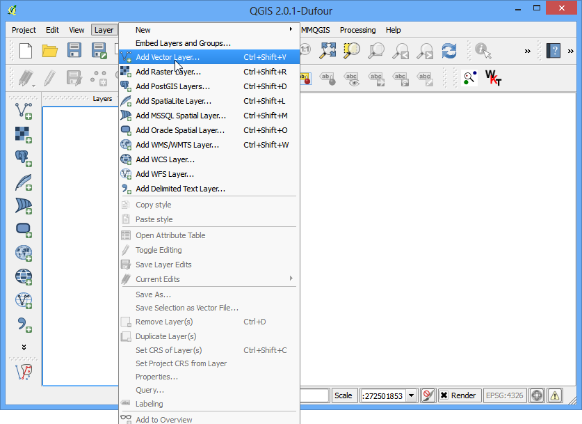

Punten in polygoon-analyses
[ Download PDF
A4
Letter ]
De kracht van GIS ligt in het analyseren van meerdere gegevensbronnen tegelijk. Vaak bevinden zich de antwoorden die u zoekt zich op vele verschillende lagen en u moet nekele analyses uitvoeren om deze informatie uit te nemen en te compileren. Eén zo’n type analyse is Points-in-Polygon. Wanneer u een polygoonlaaag en een puntenlaag heeft - en wilt weten hoeveel of waar de punten vallen binnen de grenzen van elke polygoon, kunt u deze analyse-methode gebruiken.
Overzicht van de taak
Gegeven de locaties van alle bekende significante aardbevingen, zullen we proberen uit te vinden welk land het hoogste aantal aardbevingen had.
Procedure
Open en blader naar het gedownloade bestand signif.txt.

Kies, omdat dit een tab-gescheiden bestand is, Tab als het Bestandsformaat. De velden X-veld en Y-veld zouden automatisch moeten worden gevuld. Klik op OK.
Notitie
U zou mogelijk enkele foutberichten kunnen zien wanneer QGIS probeert het bestand te importeren. Dit zijn geldige fouten en enkele rijen uit het bestand zullen niet worden geïmporteerd. U mag voor het doel van deze handleiding de fouten negeren.

Kies, omdat de gegevensset met aardbevingen coördinaten in Latitude/Longitude heeft, WGS 84 EPSG:436 als het CRS in het dialoogvenster Keuze Coördinaten ReferentieSysteem.

De puntenlaag met aardbevingen zou nu moeten worden geladen en weergegeven in QGIS. Laten we ook de laag voor de Countries openen. Ga naar . Blader naar het gedownloade bestand ne_10m_admin_0_countries.zip en klik op Open. Selecteer ne_10m_admin_0_countries.shp als de laag in het dialoogvenster Lagen selecteren om toe te voegen....

Klik op

Selecteer, in het pop-upvenster, respectievelijk de polygoonlaag en puntenlaag. Noem de uitvoerlaag earthquake_per_coutry.shp en klik op OK.
Notitie
Wees geduldig na het klikken op OK, QGIS kan tot 10 minuten nodig hebben om de resultaten uit te rekenen.
Wanneer u gevraagd wordt of u de laag wilt toevoegen aan de inhoudsopgave, klik dan op Ja.

U zult zien dat een nieuwe laag is toegevoegd aan de lagenlijst. Open de attributentabel door met rechts op de laag te klikken en te selecteren Open attributentabel.

In de attributentabel zult u een nieuw veld zien, genaamd PNTCNT. Dit is de telling van het aantal punten uit de laag met aardbevingen die binnen elke polygoon vallen.

We kunnen, om onze antwoorden te krijgen, eenvoudigweg de tabel sorteren op het veld PNTCNT en het land met de hoogste telling zal ons antwoord zijn. Klik 2 keer op de kolom ``PNTCNT``om het in aflopende volgorde te sorteren. Klik op de eerste rij om die te selecteren en sluit de attributentabel.

Terug i het hoofdvenster van QGIS zult u één object zien geaccentueerd in geel. Dat is het object dat is gekoppeld aan de geselecteerde rij in de attributentabel wat het hoogste aantal punten had. Selecteer het gereedschap Objecten identificeren en klik op die polygoon. U zult zien dat het land met het hoogste aantal significante aardbevingen China is.

We bepaalden uit een eenvoudige analyse van 2 gegevenssets dat China het hoogste aantal grote aardbevingen had. U kunt deze analyse nog meer verfijnen door ook de bevolking en de grootte van land in aanmerking te nemen en bepalen wat het meest getroffen land is door grote aardbevingen.